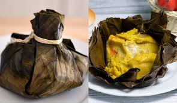

El tamal colombiano es un plato tipico para desayunar, el mas popular el tamal tolimense
Personas 1
INGREDIENTES
1.En un recipiente hondo agrega la harina de maíz, el sobre de CALDO DE GALLINA MAGGI® DESMENUZADO y el agua, mezcla hasta integrar bien y la masa quede sin grumos, adiciona la arveja, revuelve nuevamente, tapa y reserva hasta el momento de usar.
2.En una sartén calienta el aceite a fuego medio, agrega la cebolla, el tomate, el sobre de CALDO CON COSTILLA MAGGI® DESMENUZAFDO, el agua, el cilantro y cocina por 5 minutos o hasta que espese un poco el hogao.3.Corta las hojas de plátano en cuadros grandes y pon 2 hojas por tamal, en el centro de la hoja pon un poco de la masa, un poco de hogao, las carnes, una rodaja de papa, una de huevo y una de zanahoria.
4.Cierra el tamal con la primera hoja y refuerza con la segunda haciendo forma de atado con un poco de pita y amarra fuertemente, así hasta terminar con toda la masa y todos los ingredientes para los tamales.
5.Pon una olla grande a fuego medio, en el fondo coloca trozos de hojas de plátano restantes, los 3 litros de agua, encima pon los tamales y cocina de 30 a 40 minutos aproximadamente.
6.Retira del fuego y sirve caliente.
7.Los tamales que te sobren déjalos enfriar muy bien y guárdalos en la nevera para consumir después.
Z